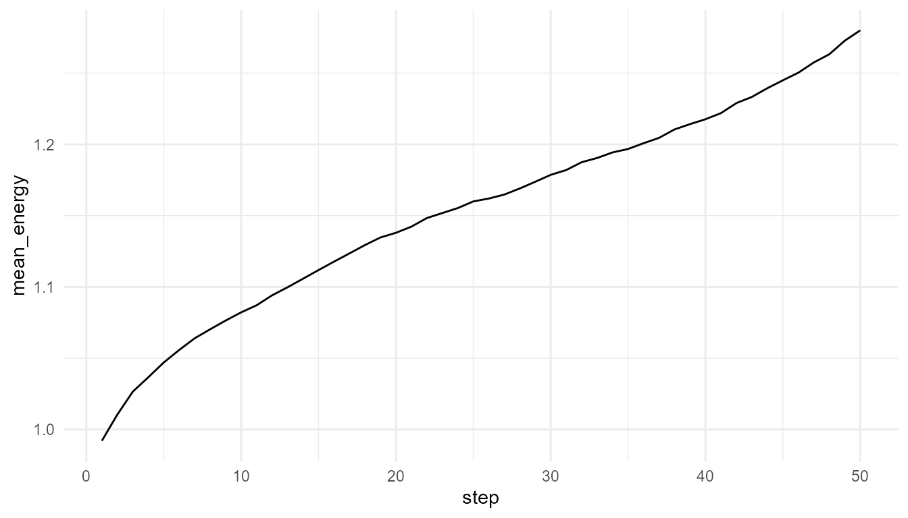
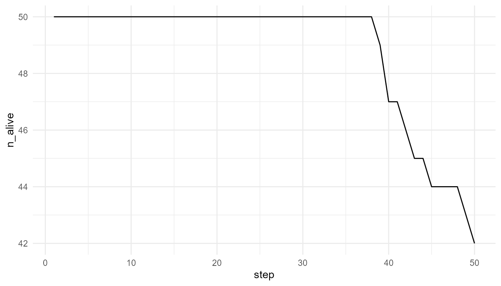

Resource Competition Tutorial
Source:vignettes/resource-competition-tutorial.Rmd
resource-competition-tutorial.RmdPurpose
This tutorial introduces
simulate_resource_competition(). Resource competition is a
core artificial-life idea because agents must interact with an
environment to maintain energy.
In this tutorial, you will run a competition simulation, inspect agent and resource outputs, plot average energy, compare resource regeneration settings, and interpret results carefully.
Basic simulation
competition <- simulate_resource_competition(
n_agents = 50,
steps = 50,
n_resources = 30,
resource_regen = 0.20,
seed = 2
)
names(competition)
#> [1] "agents" "resources" "summary"Inspect outputs
head(competition$agents)
#> agent x y energy speed efficiency
#> 1 1 0.2098611 0.074092349 0.9125861 0.07148919 0.5975891
#> 2 2 0.6856852 0.003262435 1.3371467 0.05521196 0.4830577
#> 3 3 0.5455454 0.717155232 0.9520106 0.04371456 0.5722192
#> 4 4 0.1354033 0.942352902 1.2122130 0.03500740 0.4155581
#> 5 5 0.9259978 0.247930549 0.8222090 0.03275603 0.6277294
#> 6 6 0.8847294 0.780429684 0.7198679 0.09096081 0.3656889
#> reproduction_threshold age alive step
#> 1 1.529798 1 TRUE 1
#> 2 1.398045 1 TRUE 1
#> 3 1.787090 1 TRUE 1
#> 4 1.521871 1 TRUE 1
#> 5 1.403345 1 TRUE 1
#> 6 1.538384 1 TRUE 1
head(competition$resources)
#> resource x y amount step
#> 1 1 0.6920055 0.08084101 1.0000000 1
#> 2 2 0.5599569 0.95563857 0.5526803 1
#> 3 3 0.3426912 0.97326925 1.0000000 1
#> 4 4 0.2344975 0.14015762 0.3896781 1
#> 5 5 0.4296028 0.67780596 1.0000000 1
#> 6 6 0.7367007 0.79119735 0.6611856 1
head(competition$summary)
#> step n_alive mean_energy mean_resource total_resource
#> 1 1 50 0.9920413 0.7355619 22.06686
#> 2 2 50 1.0104519 0.7045157 21.13547
#> 3 3 50 1.0265316 0.6795264 20.38579
#> 4 4 50 1.0365931 0.6723698 20.17109
#> 5 5 50 1.0469975 0.6577956 19.73387
#> 6 6 50 1.0557799 0.6461239 19.38372The result is a list with:
| Object | Meaning |
|---|---|
agents |
Agent states over time |
resources |
Resource locations and amounts over time |
summary |
Population-level summary by time step |
Plot average energy
plot_alife_sim(
competition$summary,
x = "step",
y = "mean_energy",
type = "line"
)
Plot number alive
plot_alife_sim(
competition$summary,
x = "step",
y = "n_alive",
type = "line"
)
Compare resource regeneration
low_regen <- simulate_resource_competition(
n_agents = 50,
steps = 50,
resource_regen = 0.05,
seed = 2
)
high_regen <- simulate_resource_competition(
n_agents = 50,
steps = 50,
resource_regen = 0.40,
seed = 2
)
rbind(
low_regen = measure_life_like_complexity(low_regen$agents, trait_col = "energy", time_col = "step"),
high_regen = measure_life_like_complexity(high_regen$agents, trait_col = "energy", time_col = "step")
)
#> n unique_values entropy mean sd temporal_variability
#> low_regen 2500 2408 3.135088 0.7603476 0.4187126 0.1812062
#> high_regen 2500 2500 2.881435 1.4541690 0.5888900 0.2640396
#> mean_abs_change
#> low_regen 0.01159387
#> high_regen 0.01842246Compare population summaries
data.frame(
scenario = c("low regeneration", "high regeneration"),
final_alive = c(tail(low_regen$summary$n_alive, 1), tail(high_regen$summary$n_alive, 1)),
final_mean_energy = c(tail(low_regen$summary$mean_energy, 1), tail(high_regen$summary$mean_energy, 1)),
final_total_resource = c(tail(low_regen$summary$total_resource, 1), tail(high_regen$summary$total_resource, 1))
)
#> scenario final_alive final_mean_energy final_total_resource
#> 1 low regeneration 35 0.4671489 9.00000
#> 2 high regeneration 50 1.8947420 21.34703Interpretation
Resource regeneration changes environmental constraint. If resources regenerate slowly, agents may lose energy or die. If resources regenerate quickly, more agents may maintain energy.
This illustrates an artificial-life principle:
Agent behavior cannot be understood separately from the environment.